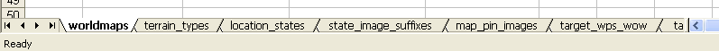

Map tutorial
Map objects are a way to allow the player to travel from area to area without having to follow a rigid path from one exit to the next. They're useful for representing large expanses of wide-open countryside, for example, or a city with various districts that the player can travel between freely but is too large to conveniently fit in a single area. Maps allow a world to be large without having to detail every little irrelevant place in it.
If you start by creating a new map resource within the designer toolkit, you'll quickly find that there is only a very limited pre-defined list of map images that are available for use. That's because map layouts are defined in a 2DA ("two-dimensional array"), a binary table of data that is used by the toolset to provide definitions but that is not itself editable from it. You may have encountered references to 2DAs when working with other objects. For example, the list of variables that an object's scripts can refer to is stored in a 2DA. This tutorial is going to assume that you've never worked with 2DAs themselves before. In a sense, this tutorial is as much a 2DA tutorial as it is a map tutorial.
Contents
Terminology
This tutorial makes use of a number of different three-letter acronyms and specific terms that may be troublesome to keep track of at first. Before we dive straight in, here's a cheat sheet that may prove useful:
- 2DA - "two-dimensional array", the table of data we'll be editing. Note that a 2DA can be stored in a human-readable or machine-readable format, each of which has their own names. "2DA" is used to refer to the table as an abstract concept.
- XLS - the file extension for an Excel spreadsheet.
- Worksheet - tabbed panes within an Excel spreadsheet. Each Excel spreadsheet can contain multiple worksheets and each worksheet can represent one 2DA, so one spreadsheet can contain multiple 2DAs.
{kind=link}

- GDA - The file extension for a binary file usable by the game. 2DAs that have been processed by the resource exporter will be stored in this form.
- TGA - Targa graphics file extension. TGA graphic files are used to define the underlying appearance of the map itself.
- M2DA - "Multiple 2DA". Previous BioWare games have made use of 2DAs, but the 2DAs used in Dragon Age use this new format instead. It allows several different 2DAs to be combined together and treated as a single 2DA by the game, which is very useful for adding new content to an existing 2DA.
The worldmaps.xls spreadsheet
See also worldmaps.xls.
If we're creating maps for a brand new module we could in theory start with a blank Excel spreadsheet and build the required 2DAs from scratch. It's much easier, however, to start with an existing copy of the relevant spreadsheet from another module and replace the values within it with our own.
The spreadsheet that contains all the 2DAs relevant to world maps is worldmaps.xls. Open it in Excel and you'll find that it contains, among other worksheets, the "worldmaps" worksheet.
{kind=link}
This is the core 2DA that defines what maps are available in the Designer Toolset's "Map" dropdown menu.
First, some standard features that all 2DA worksheets will have:
- The first row of the worksheet contains the labels of the columns. Don't change the names of columns or the game won't be able to recognize them.
- The second row contains a keyword describing the data type of that column. Again, don't change this or the game will become confused by what it's seeing.
- The first column contains ID numbers. Each row needs to have a unique ID number.
In the case of the worldmaps worksheet there are four columns that contain the data defining the map layout.
- Label - The name that this map layout will be known by in the Designer Toolkit's dropdown menu. It's not seen by the player.
- NameStrRef - a string reference for the name of the table. See string editor for how to add strings to your module's talk table. This is the name that may be seen by players.
- MAP - The filename of the .tga that defines the map's appearance, without the .tga extension. Also supported is the .dds file format.
- TargetWpTable - The names of 2DAs that contains information about what waypoints the player appears at within areas accessible from the map. This is discussed in greater detail below.
- TargetWpTableID - a row ID in the M2DA_Base 2DA that references the same 2DA in the TargetWpTable column. This speeds up lookup of the 2DA by the game.
- TripsCounterTable - A table showing which trips should have random encounters. We won't be going into detail about this in this tutorial.
NOTE: The 'MAP' column specifies the filename you need for the map to appear in the toolset. For the map to appear in game, you must include language specific copies (they don't need to be translated, of course, but the files need to exist). You need to have a copy of your map with each of the below suffixes. For example, if you put 'mymap' in the MAP column, you'd have mymap.tga to get it to appear in the toolset and mymap_en-us.tga to get it to appear in the English game client.
_cs-cz _de-de _en-us _es-es _fr-fr _hu-hu _it-it _pl-pl _ru-ru
We'll need to add a new row to this table to describe the map area that we want to use in the toolset. For this example we have a map of a region named "Epona's Realm", in a file named epona.tga. We'll need to assign a unique number ID, which we'll arbitrarily set to 700 (using a high number like this makes it less likely to interfere with other people's additions in the future.). We'll call the target waypoint table "target_wps_epona" to fit with the naming convention of the other maps.
{kind=link}
In our hypothetical game module we've got three different cities that the player can reach via the world map; Dunland, Agrabia, and Serepta. They'll be represented by the areas dunland_main, agrabia_main, and serepta_main. The next thing we might want to do is create a 2DA that defines which waypoints you wind up in when you travel to each of these areas from each of the possible origin points. This isn't strictly necessary but can be used to make travel around the worldmap seem more realistic by having the player arrive at different waypoints depending on which direction they're arriving in an area from.
Again, a convenient starting place is an existing 2DA. This 2DA is another worksheet in worldmaps.xls that shows the target waypoints for a group of areas accessible from a city map in the game's single-player campaign:
{kind=link}
All of the source areas are listed in the second column, and then each column after that corresponds to a destination area for that source. Every source needs a destination column, so there should always be a number of columns equal to the number of sources plus two (the "ID" and "SourceLocation" columns). In this example, if you're in the "markets" area and then use the map to go to the "elven_alienage" area, you'll be placed at the waypoint "wmw_alienage_from_market". Since you can never travel from an area to that same area via the map the diagonal entries are left blank.
To repurpose this 2DA for Epona's Realm, first copy the worksheet and then rename it to "target_wps_epona". We'll only need three rows and three destination columns so delete the extras.
The geometry of these three cities is quite simple, they lie in an east-west row with Serepta to the west, Agrabia in the center, and Dunland to the east. We'll place waypoints in the eastern and western ends of agrabia_main's area layout to represent the player arriving from each of those directions.
So, the final version of the target_wps_epona worksheet will look like:
{kind=link}
Using M2DAs to extend the game
There's one remaining complication to be addressed now. When you generate worldmaps.GDA it will include our new map ID 700, but it also includes the old maps with the IDs 1-5. Since the file is in the override directory, these rows override the existing maps with those ID numbers in the single player campaign. This isn't a problem right now since the data is identical but it could be a problem in the future; if BioWare releases an update that needs to change those original five maps, or if some other modder wants to add some maps of his own, only one version will "win" and the result could be a mess.
This can be overcome by splitting up a 2DA into different files that all get loaded by the game and are combined into one 2DA internally. These multi-part 2DA files are known as M2DAs, which stands for "multiple 2DA". The identity of M2DA files is kept track of via their "prefix", a string of text that all M2DAs being with. In the case of the worldmaps 2DA, the prefix is "worldmaps" (ie, the worldmaps.GDA file has the "worldmaps" prefix and no suffix, so it belongs to the "worldmaps" 2DA).
What we'll do now is split out the data relating to our "Epona's Realm" map into a separate M2DA file named worldmaps_epona.GDA. Simply rename the worksheet to "worldmaps_epona" and delete the first five rows of data entirely, leaving us with this:
{kind=link}
Now when the game encounters this 2DA in the override directory it will keep the data from the original worldmaps 2DA in memory and add the data from worldmaps_epona to it. If in the future some other modder builds on top of your work they can add further worldmap M2DAs, and if a patch comes out that updates the contents of the original 2DA your mod will incorporate it without needing to be updated.
Converting XLS files into GDA files
The game can't use Excel files directly, the 2DAs must first be converted into a "binarized" form called a GDA. This is done by a command-line utility called ExcelProcessor.exe. Command-line utilities are not very user-friendly, so there are a number of different ways you might use this to make the process easier.
Note that there will be a separate GDA file for each worksheet in the XLS file, named after the worksheets in the XLS file. We only need to use two of them; worldmaps_epona.GDA and target_wps_epona.GDA. Copy these files into your game's override directory along with epona.tga and "Epona's Realm" will become available in the toolset's dropdown menu.
- See Compiling 2DAs
Creating a map and adding pins
Now we can at last see the map as an option in the drop-down menus of the toolset. Create a map and set the "Map" property to Epona's Realm, and the map should appear.
{kind=link}
There's not much to the map itself - its only configurable properties are Parent Map, Tag, and Map. To make the map useful beyond simply displaying a graphic we'll need to add map pins (icons representing destinations). You can also add "trails", which are a series of icons that you can make appear between different pins to mark the player's passage, but these are of lesser importance and can be left for later or omitted entirely.
To insert a pin, right-click on the map and select "insert pin" from the drop-down menu. The pointer will turn into a crosshair that you can click anywhere on the map to place a pin (pins can also be dragged around after creation so don't worry if you miss slightly). The pin will be added to the tree view to the left of the map and, when selected, you can view its properties in the object inspector.
{kind=link}
The most important properties to set here are:
- AreaTag - tells the game which area to take the player to when he clicks on this pin. Our Dunland pin will have this set to dunland_main.
- Initial State - tells the game whether to display the pin and whether to make it clickable; you will often want to have pins on the map that only become available to the player at some point later in the game. We'll set Dunland to "grayed out" right now, since we'll want the player to know about its existence but not be able to go there right away.
- Name - This name is shown to the player.
- Pin Type - A list of icons that can be used for the pin. The list of appearances available can be added to in
worldmaps.xls, you may have noticed themap_pin_imagesworksheet when you were editing it earlier.
Other properties you may wish to set include "Tooltip" (a longer description that will be shown to the player if he hovers the mouse pointer over the pin) and "Waypoint Override", which designates which waypoint in the pin's target area to send the player to when he clicks on it. This waypoint overrides the one set in target_wps_epona but has less fine-grained control available; it can be useful for testing purposes.
The "TerrainType" property is used to determine which group of random encounters to draw from. Setting up random encounters is a more advanced topic that we won't cover in this tutorial.
{kind=link}
Showing the player the map
Once you've got a map built for your module you'll need to tell the game how to use it. There are a number of wrapper functions in wrappers_h that you'll find useful for this:
This function tells the game what the current default "world map" is. You'll want to set this to your default world map as part of the initial setup of your module, and if you have multiple different maps you'll need to call this function again later in the game to switch which one is active (for example in a plot script that triggers when the player completes a certain task or moves to a certain area).
!!Need to find out more about this one.!!
oLocation is a map pin, nStatusId is an integer identifier for one of the status states (such as active, grayed out, destroyed), and the optional bSuppressActiveFlash flag tells the game to omit the visual highlighting that is usually shown around map pins that have had their status changed since the last time the player looked at the map.
This marks the player's current location on the map.
Sending the player to the world map via an area transition
To set up an area transition placeable (such as a door) to send the player to the world map when an area transition is performed, set the placeable's PLC_AT_DEST_AREA_TAG variable to the string "world_map". This is a special string that's used to signal the placeable_core script's area-transition-handling code that it needs to show a map instead. When the placeable is triggered it will send an EVENT_TYPE_TRANSITION_TO_WORLD_MAP event to the module's event script.
The default module_core script doesn't handle this event so you'll need to add your own module event script to override this behavior. The module's event script should call the following core script functions:
SetWorldMapGuiStatus(WM_GUI_STATUS_USE); OpenPrimaryWorldMap();
This displays the map to the player.
Activating and deactivating map pins
This can be done via scripting.
First get the world map pin object:
object oVillage = GetObjectByTag(WML_WOW_VILLAGE);
Then call the following to activate the pin:
WR_SetWorldMapLocationStatus(oVillage, WM_LOCATION_ACTIVE);
Area transitions using the default area transition core script can also automatically enable certain map pins when the player travels through them. The names of these pins are set in the area transition's variables.
Handling the player's map usage
If the proper destination areas and waypoints have been set in the map pins (and optionally the target_wps 2DA) the player's movement from one location to another should be handled automatically. However, the game does provide some hooks that allows further customization or non-standard actions to be performed.
When a player clicks on a map pin, the EVENT_TYPE_BEGIN_TRAVEL event is sent to the module script.
This event has the following parameters:
- string sSource = GetEventString(ev, 0); // area tag for the source location (the area the player's leaving)
- string sTarget = GetEventString(ev, 1); // area tag for the target location (the area the player's travelling to)
- string sWPOverride = GetEventString(ev, 2); // the tag for the target waypoint override (the waypoint in the destination area that the player will appear at)
- int nSourceTerrain = GetEventInteger(ev, 0); //The terrain type of the source location
- int nTargetTerrain = GetEventInteger(ev, 1); //The terrain type of the target location - these two parameters are used in the main campaign's code for determining what sort of random encounters to generate, but that's handled entirely in scripting so you can use them for other purposes or ignore them completely if you prefer.
- int nWorldMap = GetEventInteger(ev, 2);
- object oSourceLocation = GetEventObject(ev, 0); // the map pin object representing the source location.
In the main Dragon Age campaign's module script, a large amount of complex code is triggered by the EVENT_TYPE_BEGIN_TRAVEL event. This code takes into account a lot of special-case situations that are relevant only to the particular plot and structure of the Dragon Age main campaign. But it is important to note one thing that is not done in the EVENT_TYPE_BEGIN_TRAVEL event; the actual call to UT_DoAreaTransition().
Instead, once you have finished doing whatever special-case coding and random encounter tests you choose to implement, you will need to store the destination that you're sending the player to in the module's variable table. Then call the WorldMapStartTravelling(); function to begin the map trail animation (the WorldMapStartTravelling function has optional parameters to insert a random encounter partway through the trip and to override the map pin the trail starts at).
The engine will send the EVENT_TYPE_WORLDMAP_PRETRANSITION event as it begins the map trail animation. This is where you want to call UT_DoAreaTransition(); the level will begin loading in the background as the map trail animation plays.
The following code is the most basic amount that you should need to put in your module script in order to implement area transitions via the world map:
case EVENT_TYPE_BEGIN_TRAVEL: { string sTarget = GetEventString(ev, 1); // area tag target location string sWPOverride = GetEventString(ev, 2); // waypoint tag override //if you want to do any special-case code or random encounter handling, insert it here SetLocalString(GetModule(), "WM_STORED_AREA", sTarget); //store target area's tag to a local module variable SetLocalString(GetModule(), "WM_STORED_WP", sWPOverride); //store target waypoint tag WorldMapStartTravelling(); //initiate the map's travelling animation. The engine will send EVENT_TYPE_WORLDMAP_PRETRANSITION once it's started. } case EVENT_TYPE_WORLDMAP_PRETRANSITION: { string sArea = GetLocalString(GetModule(), "WM_STORED_AREA"); //retrieve the target area tag stored in EVENT_TYPE_BEGIN_TRAVEL string sWP = GetLocalString(GetModule(), "WM_STORED_WP"); //retrieve the target waypoint tag UT_DoAreaTransition(sArea, sWP); //execute the area transition to that target. break; }
There is also a EVENT_TYPE_WORLDMAP_POSTTRANSITION event. In the Dragon Age main campaign it is used to trigger certain cutscenes that play as a result of world travel.
The EVENT_TYPE_WORLD_MAP_CLOSED is sent to the module script when the world map is closed. It has only one parameter, an integer flag that indicates whether the map was closed due to cancel being selected or due to the player traveling to a new destination.
Custom Maps
Creating maps in photoshop to use in-game
Here are some tutorials that can be used to make yourself a map in Photoshop.
Basic Map tutorial - required as it is the basic stepping stone to make any map [Difficulty = Basic]
Paper style/aged Map tutorial Style #1 [Difficulty = Beginner]
Colored 2D Map Tutorial Style #2 [Difficulty = Beginner/Intermediate]
Pseudo 3D Map Tutorial Style #3 [Difficulty = Intermeditate/Advanced]
{kind=link}
{kind=link}
{kind=link}
{kind=link}
Be sure to save the map as a .tga or .dds so the 2da will read it
All map making tutorials above are done by Jeremy Elford and are available for download at www.Jezelf.co.uk under the tutorials tab
Other Valuable Map Making Resources
Cartographer 3 + Addons -$ Simple easy to use map maker for those who don't have photoshop or the skills/knowledge to work it.
Cartographers Guild Map Making Community -Free Great website if you are seeking other tutorials, inspiration, help, possibility of hiring someone to make you a map, and more!
Youtube Tut series by ZombieNirvana -Free Great Series of tutorials on youtube
Putting your map into the toolset
Now that we've created our own map, we need to find away for the game to see it. In the previous parts of this tutorial we covered .xls files that contain 2da data. For this part we are going to modify the 2da so that it will use our newly created map instead of the one that shipped with Dragon Age.
Step 1:
Browse to your Dragon Age folder > tools > Source > 2DA and find the worldmaps.xls
{kind=link}
Step 2:
Create a folder, somewhere on your hard drive, such as "C:\Dragon_Age\test_mod\" (do not allow any of the folders to have space)
{kind=link}
Step 3:
Go back to your window with the Dragon Age>Tools>source>2da and copy the worldmaps.xls to your newly created folder.
Step 4:
open up your copied over worldmaps.xls and it should be on the first tab. You will notice that there are multiple tabs on the bottom, which make up the 2da.
Step 5:
After you have opened up the .xls you will see
1 Wide Open World 396061 Worldmap target_wps_wow 1012 enc_trips_sp
{kind=link}
Step 6:
This step is rather simple, in Column D Row 4, you will notice that it says world map. This is the part of the .2da that point's to the image file. After you've taken a sec to get the feel of how it works, replace the "worldmap" txt with the name of the image file you are going to use, but leave out the file extension. As you can see in the image of step5 I have replaced "worldmap" with "Genalor_DA_BL_MAP" leaving out the .tga extension.
Step 7:
Download Converter.rar this .rar contains the convert.bat and excelprocessor.exe needed to convert your newly changed worldmaps.xls into a GDA for you to use in your mod.
Step 8:
Once downloaded extract it to your folder that you copied and edited your worldmaps.xls in. When it is finished copying over, right click the covert.bat and select edit. It should pop up a window using notepad.exe that should look like this.
{kind=link}
Step 9:
You will see in the opened Covert.bat that will say
C:\Combustable_Studios\Dragon_Age_Files\XLS\test_mod\ExcelProcessor.exe worldmaps.xls -outdir=C:\Combustable_Studios\Dragon_Age_Files\XLS\test_mod\convert\
For this part you want to change
C:\Combustable_Studios\Dragon_Age_Files\XLS\test_mod\ExcelProcessor.exe
to
Your Directory where the stuff you need to convert is located\Excelprocessor.exe
and
-Outdir=C:\Combustable_Studios\Dragon_Age_Files\XLS\test_mod\convert\
to
-Outdir=Your Directory where the stuff you need to convert is located\convert\
After you have changed those batch to point to your folder and file save and close it. Once it is saved and has been close run it, if all goes well it should create a folder called convert and it will contain the following GDA's.
Location_states.GDA Map_pin_images.GDA State_image_suffixes.GDA target_wps_climax_denerim.GDA target_wps_denerim.GDA target_wps_fade.GDA target_wps_underground.GDA target_wps_wow.GDA terrain_types.GDA worldmaps.GDA
step 10: Copy those files then navigate to your BioWare\Dragon Age\AddIns\mod_name\core\override and paste them into the folder. Then go get your .tga map you created in what ever program you used and place it into that folder to.
After step 10 you may jump back up to Creating a map and adding pins tutorial, and where your map will have replaced the original world map.
"Once you get a feel with what you are doing you may be able to do more, but I would not recommend such a thing for those who are new to this kinda stuff"---Arixsus 05:05, 28 November 2009 (UTC)